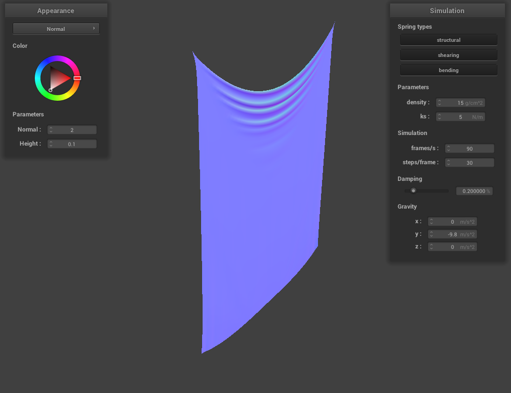
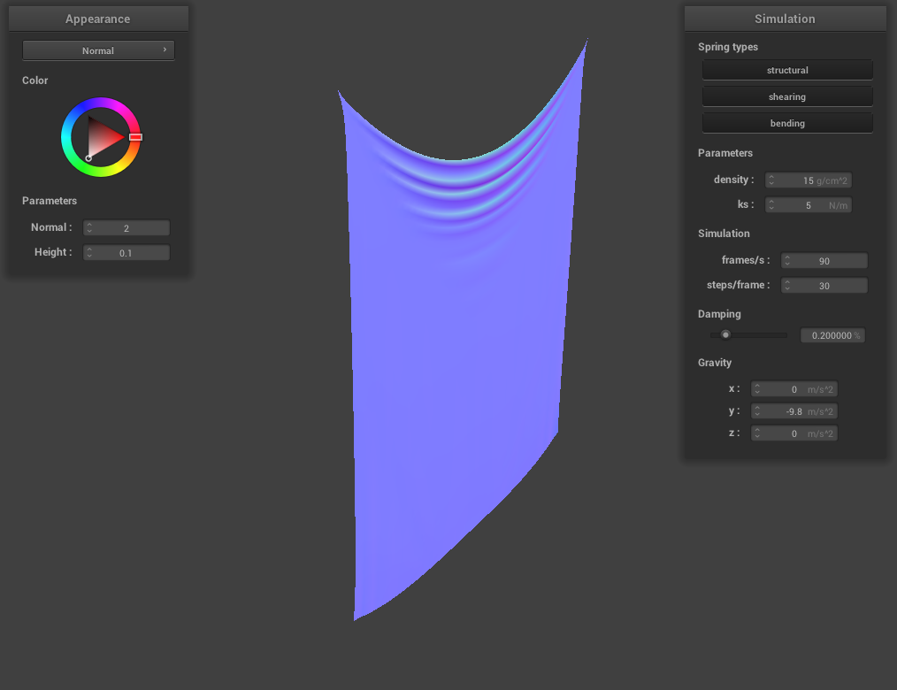

ks = 5 |
ks = 5000 |

ks = 100000 |
Give a high-level overview of what you implemented in this project. Think about what you've built as a whole. Share your thoughts on what interesting things you've learned from completing the project.
This project was focused around building a convincing physical simulation of a cloth object, using numerical simulation, as well as various texture mapping techniques.
First, I created a cloth object represented by a series of masses and springs. By then defining and constraining the relationships and physics between these masses and springs, I created a fairly accurate simulation of how cloth can really behave. This was done using numerical integration, as it is fairly performant and accurate. Coupled with collision detection for spheres, planes, and the cloth itself, the simulation became more convincing. Finally, I learnt about how to use GLSL to write shader programs, and implemented in some texture techniques such as bump mapping, displacement mapping, Blinn-Phong lighting, texture mapping, and environment mapping.
Overall, I learnt a lot from this project, and feel as if I now better understand a lot of how 3D graphics works in movies and games. The most interesting thing I found from this project was bump mapping, as this was something I always considered to be very impressive. Being able to emulate the effects of light reflecting off of a non-smooth surface, while not actually creating a non-smooth surface always seemed difficult to me. I am now aware of how they do it, and it is not as complex as I once assumed.
Take some screenshots of scene/pinned2.json from a viewing angle where you can clearly see the cloth wireframe to show the structure of your point masses and springs.
Show us what the wireframe looks like (1) without any shearing constraints, (2) with only shearing constraints, and (3) with all constraints.
|
|
|
|
|
|
Experiment with some the parameters in the simulation. To do so, pause the simulation at the start with P, modify the values of interest, and then resume by pressing P again. You can also restart the simulation at any time from the cloth's starting position by pressing R.
Describe the effects of changing the spring constantks; how does the cloth behave from start to rest with a very lowks? A highks?
For each of the above, observe any noticeable differences in the cloth compared to the default parameters and show us some screenshots of those interesting differences and describe when they occur.
Unsurprisingly, a low spring constant means a more flexible material. During the falling portion of the simulation, the cloth was much bouncier than with a higher spring constant. At the resting position, the folds are visibly smaller, and there is a large sag at the top of the cloth.
A high spring constant makes the material act stiffer. During the falling portion of the simulation, the cloth didn't bounce much. At the rest position visible in the image, there aren't many folds, and even the top of the cloth itself doesn't sag much.

ks = 5 |
ks = 5000 |
ks = 100000 |
What about for density?
A very low density shown in the left image looks similar to the high Ks shown above. This makes sense,
as a less dense material is lighter for a given volume, meaning that there is less weight force dragging the cloth
downwards.
For the high density shown in the right image below, the cloth is very straight. Again, this makes sense as the material is much denser, leading to the weight of the cloth pulling itself down to a near straight position.
|
|
|
What about for damping?
For the low damping, the falling of the cloth took a long time to settle, and it would wave back and forth for multiple oscillations. This makes sense as a lower damping means less energy is dissipated per timestep, so more energy can be carried through each swing. The resting position is similar to that of the default damping, but the extra oscillations actually cause the top of the cloth to tilt towards the camera, instead of away like it usually does.
With a very high damping of 1%, the cloth simply takes a very long time to fall. The screenshot shown was taken even whilst the cloth was still falling, simply due to how long it was taking.
|
|
|
Show us a screenshot of your shaded cloth from scene/pinned4.json in its final resting state! If you choose to use different parameters than the default ones, please list them.
Show us screenshots of your shaded cloth from scene/sphere.json in its final resting state on the sphere using the defaultks = 5000as well as withks = 500andks = 50000.

ks = 500 |
ks = 5000 |
ks = 50000 |
Describe the differences in the results.
As expected, at a lower stiffness, the cloth is softer. It wraps and conforms more to the shape of the sphere, and the edge of the cloth is seen pointing near vertical at the bottom.
The higher the stiffness, the more the cloth resister conforming to the shape of the sphere. In the image on the right with the highest stiffness, the edges of the cloth are resisting gravity more, and point more upwards at around 45 degrees.
Show us a screenshot of your shaded cloth lying peacefully at rest on the plane. If you haven't by now, feel free to express your colorful creativity with the cloth! (You will need to complete the shaders portion first to show custom colors.)
Show us at least 3 screenshots that document how your cloth falls and folds on itself, starting with an early, initial self-collision and ending with the cloth at a more restful state (even if it is still slightly bouncy on the ground).

|
|
|
Vary thedensityas well asksand describe with words and screenshots how they affect the behavior of the cloth as it falls on itself.
|
|
|
The ks was left at the default value of 5,000. Modifying the density changes the weight of the cloth. In the left image, the density was set to 5 g/cm^2. This lighter material weighs less, and this is reflected in the way that it doesn't fold down on itself as aggressively. In the right image, the density is set to 45 g/cm^2. We can see the heavier material is much more compacted, and folded up much more, due to the larger weight force it is experiencing.
|
|
|
The density was left at the default 15 g/cm^2. In the left image, with a ks of 50, we can see the material is very wrinkled. This makes sense, as the lower spring constant means that the material can bend much more aggressively without rebounding, allowing for all these small wrinkles. Conversely, in the right images with a ks of 50,000, the material is unable to stay folded up into small sections due to the large spring constant making it stiff. As a result, there are only a few folds, with most of the material bouncing back to a straight position. An interesting observation is that the low density material rests in a similar position to the high stiffness material. This makes sense, as both types are discouraged to fold, either because the material itself resists, or there simply isn't much weight force encouraging it to fold.
Explain in your own words what is a shader program and how vertex and fragment shaders work together to create lighting and material effects.
A shader is a program that determines the final output colour of a pixel, based on geometric information taken from the 3D scene.
A vertex shader, as the name implies, works on the vertices of a 3D model. In the code provided in Default.vert, the shader works to simply take in object space vertex information, and transform it to world space. Once this is done, the world space information of the vertex is passed to a fragment shader for further computation.
The fragment shaders take in the vertex information that was preprocessed by the .vert shader. They then select the final colour for the pixel being drawn to, and this is where you can choose to create different materials and effects depending on what you want.
Explain the Blinn-Phong shading model in your own words. Show a screenshot of your Blinn-Phong shader outputting only the ambient component, a screen shot only outputting the diffuse component, a screen shot only outputting the specular component, and one using the entire Blinn-Phong model.
The images below are exaggerated to show the effects of each component.
As you can see, ambient contributes a constant level of shading regardless of light source or surface direction.
Diffuse is a matte surface reflection that reflects light independent of the view direction, and only accounts for the light direction.
The specular component is much more specific, and reflects light in a narrower field. This field is roughly where the view direction is aligned with the light direction mirrored in the surface normal. This is essentially how a mirror works, and explains why the highlight only appears on areas of the surface that are essentially a direct reflecting point from the view angle to the light source itself.
The Blinn-Phong model simply combines all three components together, creating a fairly convincing material. By changing some parameters of the model, you can create materials that are more specular, or more matte in appearance.
|
|
|
|
|
|
Show a screenshot of your texture mapping shader using your own custom texture by modifying the textures in /textures/.
|
|
|
Show a screenshot of bump mapping on the cloth and on the sphere. Show a screenshot of displacement mapping on the sphere. Use the same texture for both renders. You can either provide your own texture or use one of the ones in the textures directory, BUT choose one that's not the defaulttexture_2.png. Compare the two approaches and resulting renders in your own words. Compare how your the two shaders react to the sphere by changing the sphere mesh's coarseness by using-o 16 -a 16and then-o 128 -a 128.
|
|
|
|
-o 16 -a 16 |
-o 128 -a 128 |
Bump mapping does a good job of capturing the way that light would reflect off of ridges and bumps. However, as is more evident on the sphere, it doesn't hold up to close scrutiny. When comparing the top right image with the bottom right image, it is clear that the bump mapping doesn't actually capture the ridges, but it does a pretty good job of emulating how the light would reflect off of them. In contrast, the displacement textures do show an actual, visible change in the ridges.
In the bottom left image, we can see that the sphere mesh is fairly coarse. This means that the displacement map is also very rough, and does a poor job of matching the texture. In the bottom right image, with a higher sphere mesh resolution, the ridges match pretty closely with the texture, giving a more accurate displacement map.
Show a screenshot of your mirror shader on the cloth and on the sphere.
|
|
|
Explain what you did in your custom shader, if you made one.
N/A
I (Cecil Symes) did the project solo.
The final (optional) part for the mesh competition is where you have the opportunity to be creative and individual, so be sure to provide a good description of what you were going for, what you did, and how you did it.
N/A
If you implemented any additional technical features for the cloth simulation, clearly describe what you did and provide screenshots that illustrate your work. If it is an improvement compared to something already existing on the cloth simulation, compare and contrast them both in words and in images.
N/A